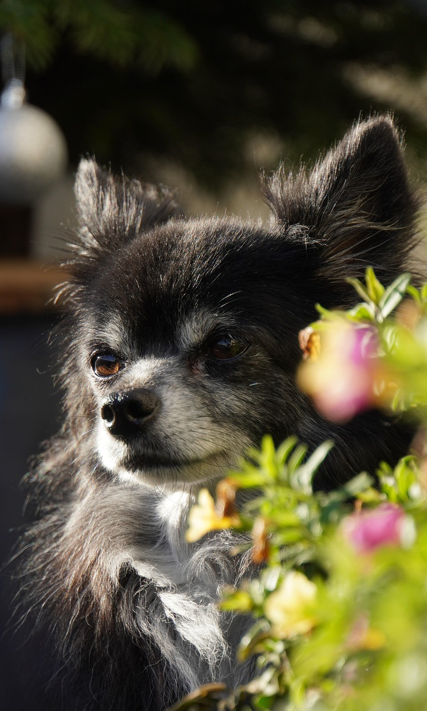
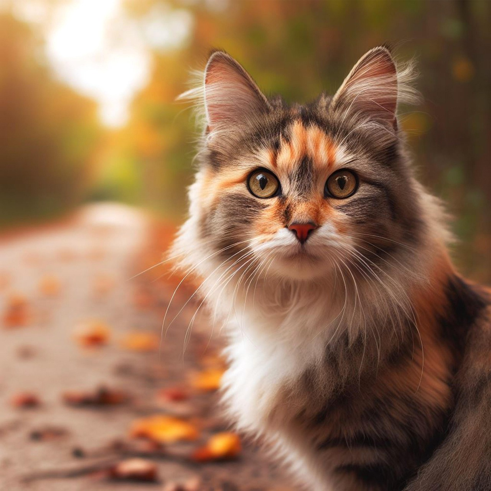
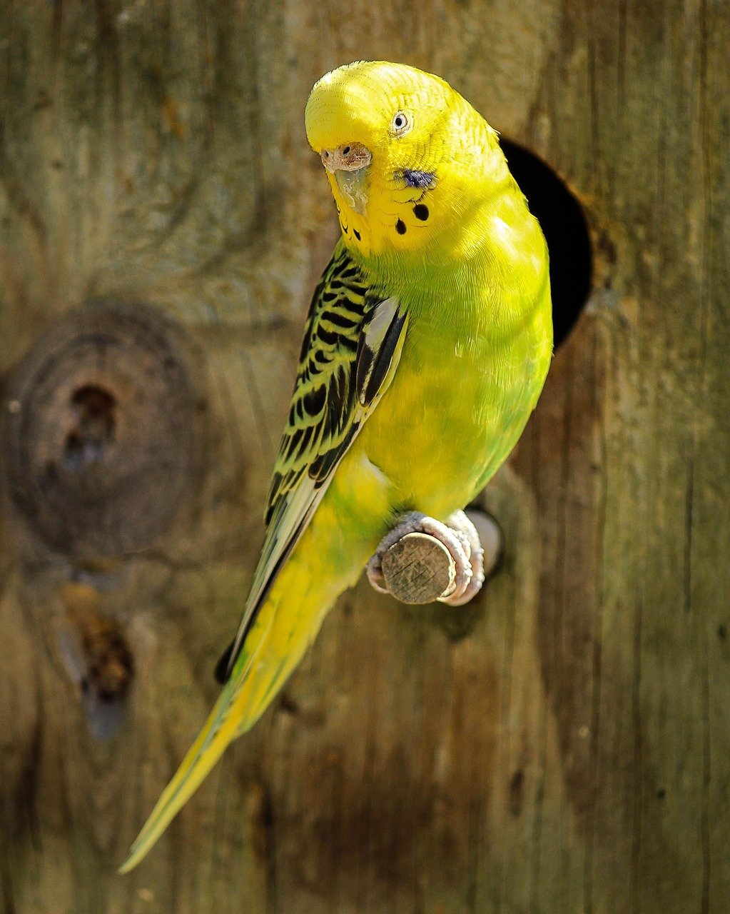
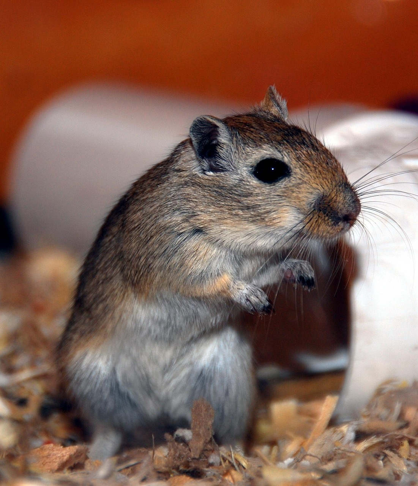

Categories
The following categories of pet photography are accepted on this website. We do not currently offer categories for reptiles or farm animals, but should we find sufficient audience interest, we can consider adding them. If you would like to see another category of pet photos on our site or offered in our contests, please email tuttlen422@macomb.edu
Information provided in these categories is general, to help you understand what sort of information and family-friendly pet photos we look for in our competitions and for our website. (If you do not want to participate in a competition but want to see your pet photo featured on our site, please let us know, we rotate our page photos often. We also occasionally add a few words about your pet.) Please view our Rules and Submit pages for photo submission requirements.
Dogs

This category encompasses all dog breeds and ages, from puppies to adults to senior dogs. If you know your dog’s breed and can provide us with a few interesting facts about the breed when you submit your photo, we would love to hear from you in the message section of our Submit page. If you have a mixed breed, tell us your story: How and why did you choose your dog? Did he or she come from a rescue, shelter or other location? We love providing these behind-the-scenes stories to go along with our photos when possible. We welcome both still and action shots, color and black and white photos (Unless otherwise specified: If a theme is, for example, St. Patrick’s Day: Wearing of the Green, color photos are required. We want to see your pet wearing green or in a green setting, so we need color photos.)
Cats

This category encompasses all cat breeds and ages, from kittens to adults to senior cats. If you know your cat’s breed and can provide us with a few interesting facts about the breed when you submit your photo, we would love to hear from you in the message section of our Submit page. If you have a mixed breed, tell us your story: How and why did you choose your cat? Did he or she come from a rescue, shelter or other location? We love providing these behind-the-scenes stories to go along with our photos when possible. We welcome both still and action shots, color and black and white photos. (Unless otherwise specified: If a theme is, for example, St. Patrick’s Day: Wearing of the Green, color photos are required. We want to see your pet wearing green or in a green setting, so we need color photos.)
Birds

Due to audience requests, we have added a new category to our website dedicated to our Feathered Friends: Bird pets! Whether you have a parrot or a parakeet, canary or cockatiel, we welcome your photos! Pictures of birds flying freely in your home or in a flight cage are welcome. We love providing behind-the-scenes stories to go along with our photos when possible. Please include them in the message section of our Submit page. If your bird has a favorite song it likes to sing along with, tell us about it! If it has a favorite and family-friendly phrase it loves to say, let us know! (Family-friendly language only, please. If your bird uses obscene or inappropriate language or songs, we will not accept stories or photos). We welcome both still and action shots, color and black and white photos. (Unless otherwise specified: If a theme is, for example, St. Patrick’s Day: Wearing of the Green, color photos are required. We want to see your pet wearing green or in a green setting, so we need color photos.)
Small Animals

This is one of our most diverse categories! We accept photos of many different types of small animals that people keep as pets. Some of these include rabbits, hamsters, rats, mice, ferrets, guinea pigs, chinchillas and gerbils. We love both still and action shots, color or black and white photos. (Unless otherwise specified: If a theme is, for example, St. Patrick’s Day: Wearing of the Green, color photos are required. We want to see your pet wearing green or in a green setting, so we need color photos.) Tell us some interesting facts about your small animal as well. We additionally welcome stories about how you chose your pet, and fun facts: Does your hamster live for running marathons on his wheel? Does your ferret only sleep comfortably around your neck in the afternoon? Tell us about it! We love providing these behind-the-scenes stories to go along with our photos when possible. Please include them in the message section of our Submit page.